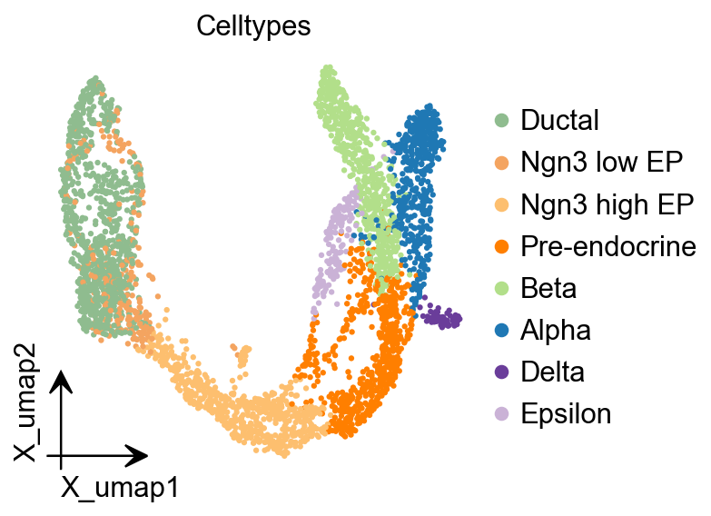
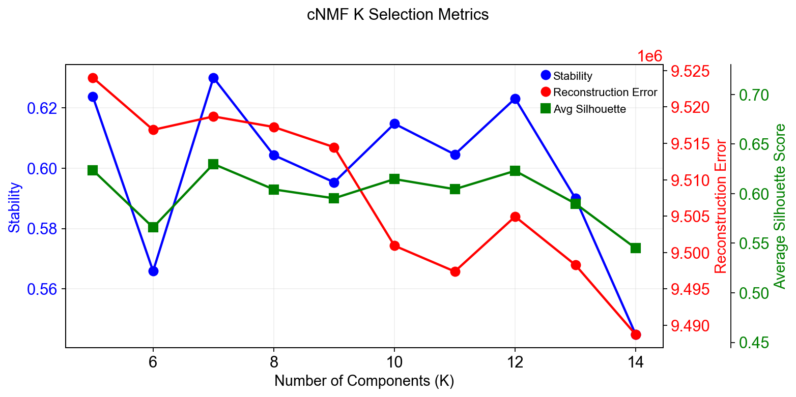
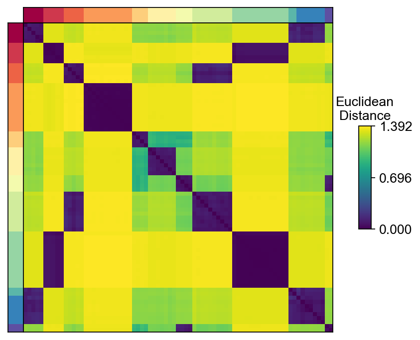
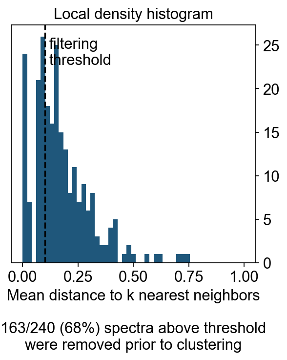
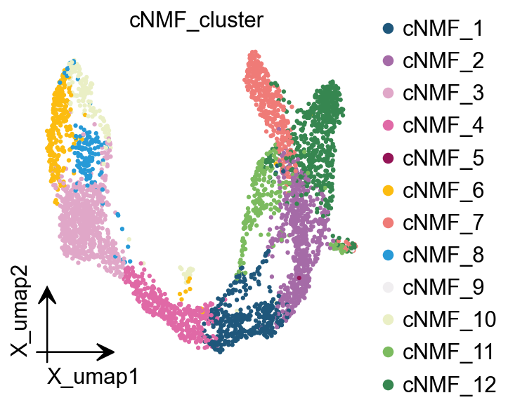
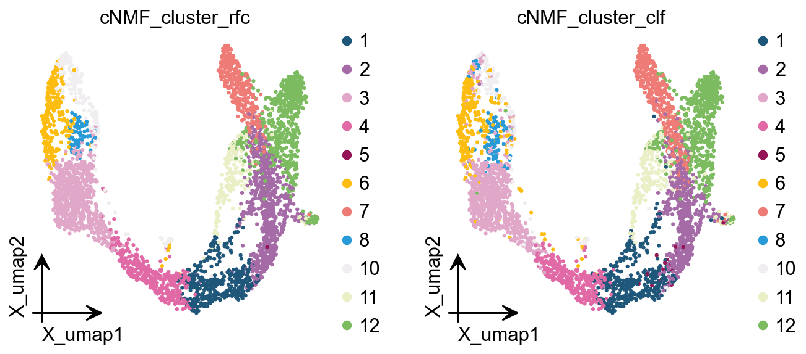
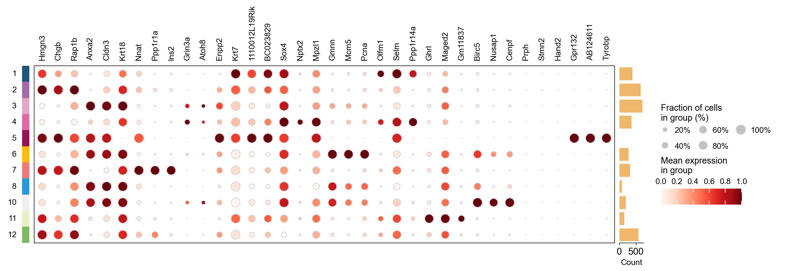
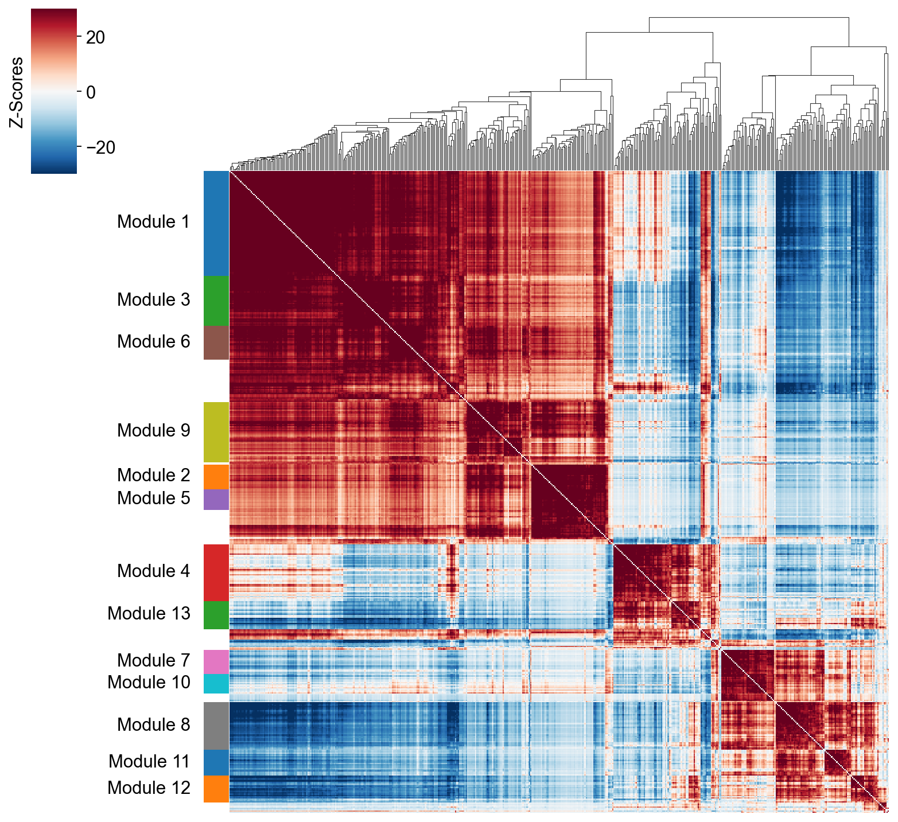

GeneModule Identified#
In omicverse, we prepared two methods to identify the gene module, one is cNMF, the other one is hospot.
import scanpy as sc
import omicverse as ov
ov.style(font_path='Arial')
%load_ext autoreload
%autoreload 2
🔬 Starting plot initialization...
Using already downloaded Arial font from: /tmp/omicverse_arial.ttf
Registered as: Arial
🧬 Detecting GPU devices…
✅ NVIDIA CUDA GPUs detected: 1
• [CUDA 0] NVIDIA H100 80GB HBM3
Memory: 79.1 GB | Compute: 9.0
____ _ _ __
/ __ \____ ___ (_)___| | / /__ _____________
/ / / / __ `__ \/ / ___/ | / / _ \/ ___/ ___/ _ \
/ /_/ / / / / / / / /__ | |/ / __/ / (__ ) __/
\____/_/ /_/ /_/_/\___/ |___/\___/_/ /____/\___/
🔖 Version: 1.7.9rc1 📚 Tutorials: https://omicverse.readthedocs.io/
✅ plot_set complete.
Loading dataset#
Here, we use the dentategyrus dataset as an example for cNMF or Hospot.
adata=ov.datasets.pancreatic_endocrinogenesis()
🔍 Downloading data to ./data/endocrinogenesis_day15.h5ad
⚠️ File ./data/endocrinogenesis_day15.h5ad already exists
Loading data from ./data/endocrinogenesis_day15.h5ad
✅ Successfully loaded: 3696 cells × 27998 genes
%%time
adata=ov.pp.preprocess(adata,mode='shiftlog|pearson',n_HVGs=2000,)
adata
🔍 [2026-01-07 17:06:35] Running preprocessing in 'cpu' mode...
Begin robust gene identification
After filtration, 17750/27998 genes are kept.
Among 17750 genes, 16426 genes are robust.
✅ Robust gene identification completed successfully.
Begin size normalization: shiftlog and HVGs selection pearson
🔍 Count Normalization:
Target sum: 500000.0
Exclude highly expressed: True
Max fraction threshold: 0.2
⚠️ Excluding 1 highly-expressed genes from normalization computation
Excluded genes: ['Ghrl']
✅ Count Normalization Completed Successfully!
✓ Processed: 3,696 cells × 16,426 genes
✓ Runtime: 0.25s
🔍 Highly Variable Genes Selection (Experimental):
Method: pearson_residuals
Target genes: 2,000
Theta (overdispersion): 100
✅ Experimental HVG Selection Completed Successfully!
✓ Selected: 2,000 highly variable genes out of 16,426 total (12.2%)
✓ Results added to AnnData object:
• 'highly_variable': Boolean vector (adata.var)
• 'highly_variable_rank': Float vector (adata.var)
• 'highly_variable_nbatches': Int vector (adata.var)
• 'highly_variable_intersection': Boolean vector (adata.var)
• 'means': Float vector (adata.var)
• 'variances': Float vector (adata.var)
• 'residual_variances': Float vector (adata.var)
Time to analyze data in cpu: 1.11 seconds.
✅ Preprocessing completed successfully.
Added:
'highly_variable_features', boolean vector (adata.var)
'means', float vector (adata.var)
'variances', float vector (adata.var)
'residual_variances', float vector (adata.var)
'counts', raw counts layer (adata.layers)
End of size normalization: shiftlog and HVGs selection pearson
CPU times: user 1.43 s, sys: 717 ms, total: 2.15 s
Wall time: 1.51 s
AnnData object with n_obs × n_vars = 3696 × 16426
obs: 'clusters_coarse', 'clusters', 'S_score', 'G2M_score'
var: 'highly_variable_genes', 'n_cells', 'percent_cells', 'robust', 'highly_variable_features', 'means', 'variances', 'residual_variances', 'highly_variable_rank', 'highly_variable'
uns: 'clusters_coarse_colors', 'clusters_colors', 'day_colors', 'neighbors', 'pca', 'log1p', 'hvg', 'status', 'status_args', 'REFERENCE_MANU'
obsm: 'X_pca', 'X_umap'
layers: 'spliced', 'unspliced', 'counts'
obsp: 'distances', 'connectivities'
ov.pp.scale(adata)
ov.pp.pca(adata)
computing PCA🔍
with n_comps=50
🖥️ Using sklearn PCA for CPU computation
🖥️ sklearn PCA backend: CPU computation
finished✅ (0:00:02)
import matplotlib.pyplot as plt
from matplotlib import patheffects
fig, ax = plt.subplots(figsize=(4,4))
ov.pl.embedding(
adata,
basis="X_umap",
color=['clusters'],
frameon='small',
title="Celltypes",
#legend_loc='on data',
legend_fontsize=14,
legend_fontoutline=2,
#size=10,
ax=ax,
#legend_loc=True,
add_outline=False,
#add_outline=True,
outline_color='black',
outline_width=1,
show=False,
)
<Axes: title={'center': 'Celltypes'}, xlabel='X_umap1', ylabel='X_umap2'>
{kind=link}

Consensus Non-negative Matrix factorization (cNMF)#
cNMF is an analysis pipeline for inferring gene expression programs from single-cell RNA-Seq (scRNA-Seq) data.
It takes a count matrix (N cells X G genes) as input and produces a (K x G) matrix of gene expression programs (GEPs) and a (N x K) matrix specifying the usage of each program for each cell in the data. You can read more about the method in the github and check out examples on dentategyrus.
Dylan KotliarAdrian VeresM Aurel NagyShervin TabriziEran HodisDouglas A MeltonPardis C Sabeti (2019) Identifying gene expression programs of cell-type identity and cellular activity with single-cell RNA-Seq eLife 8:e43803.
Initialize and Training model#
In omicverse, you can set use_gpu=True to perform the NMF analysis using torchnmf package, it’s easy to install using pip install torchnmf. But it should be noticed the accurancy is different if you use use_gpu=True mode.
import numpy as np
## Initialize the cnmf object that will be used to run analyses
cnmf_obj = ov.single.cNMF(
adata,components=np.arange(5,15), n_iter=20,
seed=14, num_highvar_genes=2000,
output_dir=None, name='pancrea_cNMF',use_gpu=True
)
normalizing counts per cell
finished (0:00:00)
## Specify that the jobs are being distributed over a single worker (total_workers=1) and then launch that worker
cnmf_obj.factorize(worker_i=0, total_workers=1)
🚀 Running NMF on GPU (device 0)
Running 200 factorization iterations for worker 0...
✓ Worker 0 completed 200 iterations. Total in memory: 200
if u want to accerlate the calculation, you can try the code below
#cnmf_obj.factorize(worker_i=0, total_workers=2)
#cnmf_obj.factorize(worker_i=1, total_workers=2)
cnmf_obj.combine(skip_missing_files=True)
Combining factorizations for k=5.
Found all 20 iterations for k=5
Combining factorizations for k=6.
Found all 20 iterations for k=6
Combining factorizations for k=7.
Found all 20 iterations for k=7
Combining factorizations for k=8.
Found all 20 iterations for k=8
Combining factorizations for k=9.
Found all 20 iterations for k=9
Combining factorizations for k=10.
Found all 20 iterations for k=10
Combining factorizations for k=11.
Found all 20 iterations for k=11
Combining factorizations for k=12.
Found all 20 iterations for k=12
Combining factorizations for k=13.
Found all 20 iterations for k=13
Combining factorizations for k=14.
Found all 20 iterations for k=14
cnmf_obj.save('test/cnmf_obj.pkl')
✓ cNMF object saved to: test/cnmf_obj.pkl
- 200 factorization iterations
- 10 merged spectra (K values)
- 0 consensus results
cnmf_obj.load('test/cnmf_obj.pkl')
📂 Load Operation:
Source path: test/cnmf_obj.pkl
Using: pickle
✅ Successfully loaded!
Loaded object type: cNMF
────────────────────────────────────────────────────────────
Compute the stability and error at each choice of K to see if a clear choice jumps out.#
Please note that the maximum stability solution is not always the best choice depending on the application. However it is often a good starting point even if you have to investigate several choices of K
sil_data = cnmf_obj.calculate_silhouette_k(k=7, density_threshold=2.0)
print(f"Average silhouette score: {sil_data['avg_silhouette']:.4f}")
print(f"Per-sample scores: {sil_data['silhouette_values']}")
print(f"Cluster labels: {sil_data['cluster_labels']}")
Average silhouette score: 0.6299
Per-sample scores: [0.7106916 0.5630814 0.9380699 0.9647325 0.7674971 0.6231896
0.7462224 0.37565622 0.6270655 0.06985006 0.57842237 0.7953116
0.6916376 0.78109527 0.7101993 0.55603576 0.7441653 0.75451505
0.5479283 0.9625558 0.39097318 0.43278462 0.97507685 0.60460097
0.7781605 0.67471343 0.53983855 0.76693016 0.64284235 0.41358513
0.7894957 0.5756324 0.9714798 0.54308915 0.73912 0.5916759
0.29305577 0.5943038 0.9639678 0.75087273 0.4957365 0.7721111
0.5499817 0.5790103 0.73023146 0.588068 0.77418405 0.18887511
0.3828089 0.71155 0.93825644 0.66316015 0.7878561 0.9744356
0.7274356 0.628735 0.96383363 0.63263124 0.64927 0.17515936
0.7908563 0.59846324 0.67699015 0.37909067 0.7533861 0.27464965
0.94846934 0.56372494 0.62612045 0.39772192 0.4309683 0.50130105
0.5352081 0.2945753 0.7588943 0.7905221 0.7286009 0.94101614
0.5963504 0.60703915 0.6570392 0.17053658 0.7238535 0.63654566
0.164855 0.60783756 0.70025706 0.64824665 0.08693045 0.70052814
0.6865447 0.5977072 0.95368004 0.7289692 0.44170102 0.7777483
0.7743478 0.4995771 0.69891447 0.580345 0.78578705 0.3635015
0.71654373 0.9585754 0.6125389 0.629792 0.6913672 0.4552708
0.10541853 0.96240723 0.38784292 0.6745267 0.79051185 0.70214224
0.84903276 0.6250461 0.509497 0.055472 0.6147614 0.49948195
0.25953737 0.72868174 0.7900021 0.6660114 0.360943 0.6711156
0.7861118 0.9580041 0.57364947 0.43281323 0.78196883 0.64617914
0.50612485 0.1185286 0.7382589 0.9742657 0.67354196 0.76530886
0.5728536 0.7114021 ]
Cluster labels: [4 2 0 6 3 1 5 1 2 4 1 3 4 5 4 2 5 3 1 0 1 1 6 2 5 4 1 3 2 1 3 4 6 1 5 1 1
2 0 5 4 3 1 2 4 3 5 3 1 5 0 2 3 6 4 1 0 1 2 4 3 5 4 4 5 2 0 1 3 1 1 1 2 2
5 3 4 6 1 5 2 3 4 3 3 1 5 2 4 3 4 2 0 4 1 3 5 1 5 1 3 1 4 0 2 1 3 5 2 0 2
4 3 4 0 1 5 2 2 1 1 4 3 2 1 5 5 0 4 1 3 2 1 1 3 6 2 5 1 4]
fig, axes = plt.subplots(2,4,figsize=(12,8))
for k,ax in zip(np.arange(5,15),axes.flatten()):
cnmf_obj.plot_silhouette_for_k(
k=k,
density_threshold=2.0,
show_avg=True,
cmap='Spectral',ax=ax
)
plt.tight_layout()
{kind=link}
fig=cnmf_obj.k_selection_plot(close_fig=False)
Calculating silhouette scores for K selection...
{kind=link}

In this range, K=12 gave the most stable solution so we will begin by looking at that.
The next step computes the consensus solution for a given choice of K. We first run it without any outlier filtering to see what that looks like. Setting the density threshold to anything >= 2.00 (the maximum possible distance between two unit vectors) ensures that nothing will be filtered.
Then we run the consensus with a filter for outliers determined based on inspecting the histogram of distances between components and their nearest neighbors
selected_K = 12
density_threshold = 2.00
cnmf_obj.consensus(k=selected_K,
density_threshold=density_threshold,
show_clustering=True,
close_clustergram_fig=False)
{kind=link}
The above consensus plot shows that there is a substantial degree of concordance between the replicates with a few outliers. An outlier threshold of 0.1 seems appropriate
density_threshold = 0.10
cnmf_obj.consensus(k=selected_K,
density_threshold=density_threshold,
show_clustering=True,
close_clustergram_fig=False)
{kind=link}
Visualization the result#
import seaborn as sns
import matplotlib.pyplot as plt
from matplotlib import patheffects
from matplotlib import gridspec
import matplotlib.pyplot as plt
width_ratios = [0.2, 4, 0.5, 10, 1]
height_ratios = [0.2, 4]
fig = plt.figure(figsize=(sum(width_ratios), sum(height_ratios)))
gs = gridspec.GridSpec(len(height_ratios), len(width_ratios), fig,
0.01, 0.01, 0.98, 0.98,
height_ratios=height_ratios,
width_ratios=width_ratios,
wspace=0, hspace=0)
D = cnmf_obj.topic_dist[cnmf_obj.spectra_order, :][:, cnmf_obj.spectra_order]
dist_ax = fig.add_subplot(gs[1,1], xscale='linear', yscale='linear',
xticks=[], yticks=[],xlabel='', ylabel='',
frameon=True)
dist_im = dist_ax.imshow(D, interpolation='none', cmap='viridis',
aspect='auto', rasterized=True)
left_ax = fig.add_subplot(gs[1,0], xscale='linear', yscale='linear', xticks=[], yticks=[],
xlabel='', ylabel='', frameon=True)
left_ax.imshow(cnmf_obj.kmeans_cluster_labels.values[cnmf_obj.spectra_order].reshape(-1, 1),
interpolation='none', cmap='Spectral', aspect='auto',
rasterized=True)
top_ax = fig.add_subplot(gs[0,1], xscale='linear', yscale='linear', xticks=[], yticks=[],
xlabel='', ylabel='', frameon=True)
top_ax.imshow(cnmf_obj.kmeans_cluster_labels.values[cnmf_obj.spectra_order].reshape(1, -1),
interpolation='none', cmap='Spectral', aspect='auto',
rasterized=True)
cbar_gs = gridspec.GridSpecFromSubplotSpec(3, 3, subplot_spec=gs[1, 2],
wspace=0, hspace=0)
cbar_ax = fig.add_subplot(cbar_gs[1,2], xscale='linear', yscale='linear',
xlabel='', ylabel='', frameon=True, title='Euclidean\nDistance')
cbar_ax.set_title('Euclidean\nDistance',fontsize=12)
vmin = D.min().min()
vmax = D.max().max()
fig.colorbar(dist_im, cax=cbar_ax,
ticks=np.linspace(vmin, vmax, 3),
)
cbar_ax.set_yticklabels(cbar_ax.get_yticklabels(),fontsize=12)
[Text(1, 0.0, '0.000'),
Text(1, 0.6961943507194519, '0.696'),
Text(1, 1.3923887014389038, '1.392')]
{kind=link}

density_filter = cnmf_obj.local_density.iloc[:, 0] < density_threshold
fig, hist_ax = plt.subplots(figsize=(4,4))
#hist_ax = fig.add_subplot(hist_gs[0,0], xscale='linear', yscale='linear',
# xlabel='', ylabel='', frameon=True, title='Local density histogram')
hist_ax.hist(cnmf_obj.local_density.values, bins=np.linspace(0, 1, 50))
hist_ax.yaxis.tick_right()
xlim = hist_ax.get_xlim()
ylim = hist_ax.get_ylim()
if density_threshold < xlim[1]:
hist_ax.axvline(density_threshold, linestyle='--', color='k')
hist_ax.text(density_threshold + 0.02, ylim[1] * 0.95, 'filtering\nthreshold\n\n', va='top')
hist_ax.set_xlim(xlim)
hist_ax.set_xlabel('Mean distance to k nearest neighbors\n\n%d/%d (%.0f%%) spectra above threshold\nwere removed prior to clustering'%(sum(~density_filter), len(density_filter), 100*(~density_filter).mean()))
hist_ax.set_title('Local density histogram')
Text(0.5, 1.0, 'Local density histogram')
{kind=link}

Explode the cNMF result#
We can load the results for a cNMF run with a given K and density filtering threshold like below
result_dict = cnmf_obj.load_results(K=selected_K, density_threshold=density_threshold)
result_dict['usage_norm'].head()
| cNMF_1 | cNMF_2 | cNMF_3 | cNMF_4 | cNMF_5 | cNMF_6 | cNMF_7 | cNMF_8 | cNMF_9 | cNMF_10 | cNMF_11 | cNMF_12 | |
|---|---|---|---|---|---|---|---|---|---|---|---|---|
| index | ||||||||||||
| AAACCTGAGAGGGATA | 0.052900 | 0.557367 | 0.000422 | 0.021016 | 0.006930 | 0.003447 | 0.079662 | 0.082491 | 0.000638 | 0.005284 | 0.030603 | 0.159242 |
| AAACCTGAGCCTTGAT | 0.020833 | 0.000962 | 0.570114 | 0.043898 | 0.000887 | 0.173351 | 0.007137 | 0.132107 | 0.004638 | 0.000670 | 0.029395 | 0.016007 |
| AAACCTGAGGCAATTA | 0.000142 | 0.306285 | 0.050380 | 0.000632 | 0.017096 | 0.028461 | 0.017249 | 0.053764 | 0.000810 | 0.005584 | 0.131687 | 0.387909 |
| AAACCTGCATCATCCC | 0.011620 | 0.000740 | 0.142481 | 0.011996 | 0.002794 | 0.510735 | 0.001547 | 0.281503 | 0.003506 | 0.025785 | 0.005863 | 0.001429 |
| AAACCTGGTAAGTGGC | 0.543322 | 0.149150 | 0.003397 | 0.199798 | 0.000105 | 0.011512 | 0.023303 | 0.000721 | 0.003200 | 0.022096 | 0.025705 | 0.017692 |
result_dict['gep_scores'].head()
| 1 | 2 | 3 | 4 | 5 | 6 | 7 | 8 | 9 | 10 | 11 | 12 | |
|---|---|---|---|---|---|---|---|---|---|---|---|---|
| index | ||||||||||||
| Xkr4 | -0.007757 | -0.001951 | 0.010988 | 0.000303 | 0.000153 | -0.006076 | 0.001394 | -0.000277 | 0.007163 | -0.000909 | -0.001658 | -0.001580 |
| Mrpl15 | -0.004883 | 0.017592 | -0.018511 | -0.027615 | -0.021772 | 0.037728 | 0.013916 | 0.011741 | -0.016687 | 0.021974 | -0.005451 | -0.004443 |
| Npbwr1 | 0.008097 | 0.001318 | -0.010134 | -0.018095 | -0.016732 | 0.000294 | -0.003005 | 0.000016 | 0.055294 | -0.001144 | -0.000746 | -0.001143 |
| 4732440D04Rik | 0.008619 | -0.005695 | -0.006195 | -0.013188 | 0.014607 | 0.001333 | -0.008327 | -0.001492 | 0.005998 | 0.000943 | 0.000016 | -0.002278 |
| Gm26901 | -0.007764 | 0.026168 | -0.008942 | 0.023266 | -0.009654 | -0.017616 | -0.010079 | 0.009438 | -0.008486 | -0.003649 | -0.001237 | -0.000615 |
result_dict['gep_tpm'].head()
| 1 | 2 | 3 | 4 | 5 | 6 | 7 | 8 | 9 | 10 | 11 | 12 | |
|---|---|---|---|---|---|---|---|---|---|---|---|---|
| index | ||||||||||||
| Xkr4 | 0.000000 | 8.302266e-03 | 1.477936e-02 | 0.000000 | 1.833748e-03 | 3.670955e-05 | 8.236001e-29 | 1.203458e-02 | 0.008952 | 0.000000 | 0.000000e+00 | 0.002387 |
| Mrpl15 | 0.010844 | 4.420368e-19 | 9.274849e-01 | 0.018528 | 5.522656e-01 | 7.091711e-02 | 1.485689e-01 | 3.118949e-02 | 0.046750 | 0.155717 | 5.128206e-14 | 0.662705 |
| Npbwr1 | 0.016931 | 0.000000e+00 | 2.428719e-16 | 0.000000 | 9.940618e-04 | 4.695393e-07 | 0.000000e+00 | 0.000000e+00 | 0.000000 | 0.009431 | 0.000000e+00 | 0.000000 |
| 4732440D04Rik | 0.008692 | 1.156003e-05 | 7.946806e-03 | 0.000000 | 4.226314e-02 | 3.767684e-02 | 3.580834e-02 | 2.182026e-12 | 0.000063 | 0.005495 | 3.885308e-30 | 0.006224 |
| Gm26901 | 0.000000 | 3.010304e-02 | 3.764709e-20 | 0.000000 | 1.401298e-45 | 1.688556e-03 | 8.005813e-03 | 0.000000e+00 | 0.000000 | 0.000000 | 0.000000e+00 | 0.062770 |
result_dict['top_genes'].head()
| 1 | 2 | 3 | 4 | 5 | 6 | 7 | 8 | 9 | 10 | 11 | 12 | |
|---|---|---|---|---|---|---|---|---|---|---|---|---|
| 0 | Hmgn3 | Anxa2 | Nnat | Grin3a | Krt7 | Sox4 | Gmnn | Olfm1 | Ghrl | Birc5 | Prph | Gpr132 |
| 1 | Chgb | Cldn3 | Ppp1r1a | Atoh8 | 1110012L19Rik | Nptx2 | Mcm5 | Selm | Maged2 | Nusap1 | Stmn2 | AB124611 |
| 2 | Rap1b | Krt18 | Ins2 | Enpp2 | BC023829 | Mpzl1 | Pcna | Ppp1r14a | Gm11837 | Cenpf | Hand2 | Tyrobp |
| 3 | Cldn4 | Atp1b1 | Sdf2l1 | Ttr | Gspt1 | Bcl2 | 2810417H13Rik | Tmsb4x | Arg1 | Plk1 | Stmn4 | Fcgr3 |
| 4 | Pax6 | Lurap1l | Iapp | Tmem171 | Cck | Gadd45a | Rrm2 | Shf | Irs4 | Cks2 | Pirt | AI662270 |
We can extract cell classes directly based on the highest cNMF in each cell, but this has the disadvantage that it will lead to mixed cell classes if the heterogeneity of our data is not as strong as it should be.
cnmf_obj.get_results(adata,result_dict)
cNMF_cluster is added to adata.obs
gene scores are added to adata.var
ov.pl.embedding(adata, basis='X_umap',color=result_dict['usage_norm'].columns,
use_raw=False, ncols=3, vmin=0, vmax=1,frameon='small')
{kind=link}
ov.pl.embedding(
adata,
basis="X_umap",
color=['cNMF_cluster'],
frameon='small',
#title="Celltypes",
#legend_loc='on data',
legend_fontsize=14,
legend_fontoutline=2,
#size=10,
#legend_loc=True,
add_outline=False,
#add_outline=True,
outline_color='black',
outline_width=1,
show=False,
)
<Axes: title={'center': 'cNMF_cluster'}, xlabel='X_umap1', ylabel='X_umap2'>
{kind=link}

Here we are, proposing another idea of categorisation. We use cells with cNMF greater than 0.5 as a primitive class, and then train a random forest classification model, and then use the random forest classification model to classify cells with cNMF less than 0.5 to get a more accurate
cnmf_obj.get_results_rfc(adata,result_dict,
use_rep='scaled|original|X_pca',
cNMF_threshold=0.5)
Single Tree: 0.9555555555555556
Random Forest: 0.9873015873015873
cNMF_cluster_rfc is added to adata.obs
cNMF_cluster_clf is added to adata.obs
ov.pl.embedding(
adata,
basis="X_umap",
color=['cNMF_cluster_rfc','cNMF_cluster_clf'],
frameon='small',
#title="Celltypes",
#legend_loc='on data',
legend_fontsize=14,
legend_fontoutline=2,
#size=10,
#legend_loc=True,
add_outline=False,
#add_outline=True,
outline_color='black',
outline_width=1,
show=False,
)
[<Axes: title={'center': 'cNMF_cluster_rfc'}, xlabel='X_umap1', ylabel='X_umap2'>,
<Axes: title={'center': 'cNMF_cluster_clf'}, xlabel='X_umap1', ylabel='X_umap2'>]
{kind=link}

plot_genes=[]
for i in result_dict['top_genes'].columns:
plot_genes+=result_dict['top_genes'][i][:3].values.reshape(-1).tolist()
ov.pl.dotplot(
adata,plot_genes,
"cNMF_cluster_rfc", dendrogram=False,standard_scale='var',
)
<marsilea.heatmap.SizedHeatmap at 0x7f84d0263e20>
{kind=link}

Hotspot#
Hotspot is a tool for identifying informative genes (and gene modules) in a single-cell dataset.
DeTomaso D, Yosef N. Hotspot identifies informative gene modules across modalities of single-cell genomics. Cell Syst. 2021 May 19;12(5):446-456.e9. doi: 10.1016/j.cels.2021.04.005. Epub 2021 May 4. PMID: 33951459.
# to calculate the total_counts
sc.pp.calculate_qc_metrics(adata, percent_top=None, log1p=False, inplace=True)
# Create the Hotspot object and the neighborhood graph
# hotspot works a lot faster with a csc matrix!
adata.layers["counts_csc"] = adata.layers["counts"].tocsc()
hs = ov.single.Hotspot(
adata,
layer_key="counts_csc",
model='danb',
latent_obsm_key="X_pca",
umi_counts_obs_key="total_counts"
)
hs.create_knn_graph(
weighted_graph=False, n_neighbors=30,
)
Determining informative genes#
Now we compute autocorrelations for each gene, in the pca-space, to determine which genes have the most informative variation.
hs_results = hs.compute_autocorrelations(jobs=8)
hs_results.head(15)
| C | Z | Pval | FDR | |
|---|---|---|---|---|
| Gene | ||||
| Btbd17 | 0.735443 | 221.872382 | 0.0 | 0.0 |
| Gadd45a | 0.666501 | 213.692549 | 0.0 | 0.0 |
| Neurog3 | 0.658402 | 208.855264 | 0.0 | 0.0 |
| Spp1 | 0.806283 | 200.751152 | 0.0 | 0.0 |
| Mdk | 0.695210 | 199.681646 | 0.0 | 0.0 |
| Rps19 | 0.819013 | 199.041836 | 0.0 | 0.0 |
| Gnas | 0.701187 | 192.850484 | 0.0 | 0.0 |
| Rpl13 | 0.817551 | 192.250551 | 0.0 | 0.0 |
| Nnat | 0.780046 | 191.744472 | 0.0 | 0.0 |
| Rpl18a | 0.780471 | 191.128396 | 0.0 | 0.0 |
| Rpl32 | 0.796391 | 190.960143 | 0.0 | 0.0 |
| Gcg | 0.603454 | 190.364941 | 0.0 | 0.0 |
| Ins2 | 0.753340 | 189.588977 | 0.0 | 0.0 |
| Ppp1r1a | 0.727086 | 188.885836 | 0.0 | 0.0 |
| Rps4x | 0.797900 | 187.245979 | 0.0 | 0.0 |
Grouping genes into lineage-based modules#
To get a better idea of what expression patterns exist, it is helpful to group the genes into modules.
Hotspot does this using the concept of “local correlations” - that is, correlations that are computed between genes between cells in the same neighborhood.
Here we avoid running the calculation for all Genes x Genes pairs and instead only run this on genes that have significant autocorrelation to begin with.
The method compute_local_correlations returns a Genes x Genes matrix of
Z-scores for the significance of the correlation between genes. This object
is also retained in the hs object and is used in the subsequent steps.
# Select the genes with significant lineage autocorrelation
hs_genes = hs_results.loc[hs_results.FDR < 0.05].sort_values('Z', ascending=False).head(500).index
# Compute pair-wise local correlations between these genes
lcz = hs.compute_local_correlations(hs_genes, jobs=8)
Computing pair-wise local correlation on 500 features...
Now that pair-wise local correlations are calculated, we can group genes into modules.
To do this, a convenience method is included create_modules which performs
agglomerative clustering with two caveats:
If the FDR-adjusted p-value of the correlation between two branches exceeds
fdr_threshold, then the branches are not merged.If two branches are two be merged and they are both have at least min_gene_threshold genes, then the branches are not merged. Further genes that would join to the resulting merged module (and are therefore ambiguous) either remain unassigned (if core_only=True) or are assigned to the module with the smaller average correlations between genes, i.e. the least-dense module (if
core_only=False)
The output is a Series that maps gene to module number. Unassigned genes are indicated with a module number of -1
This method was used to preserved substructure (nested modules) while still giving the analyst
some control. However, since there are a lot of ways to do hierarchical clustering, you can also
manually cluster using the gene-distances in hs.local_correlation_z
modules = hs.create_modules(
min_gene_threshold=15, core_only=True, fdr_threshold=0.05
)
modules.value_counts()
Module
-1 93
1 82
9 47
4 44
3 39
8 37
6 26
13 22
12 21
11 20
7 19
2 19
5 16
10 15
Name: count, dtype: int64
hs.plot_local_correlations(vmin=-30, vmax=30,)
<seaborn.matrix.ClusterGrid at 0x7f52ab7e3f10>
{kind=link}

To explore individual genes, we can look at the genes with the top autocorrelation in a given module as these are likely the most informative.
# Show the top genes for a module
module = 4
results = hs.results.join(hs.modules)
results = results.loc[results.Module == module]
results.sort_values('Z', ascending=False).head(10)
| C | Z | Pval | FDR | Module | |
|---|---|---|---|---|---|
| Gene | |||||
| Btbd17 | 0.735443 | 221.872382 | 0.0 | 0.0 | 4.0 |
| Gadd45a | 0.666501 | 213.692549 | 0.0 | 0.0 | 4.0 |
| Neurog3 | 0.658402 | 208.855264 | 0.0 | 0.0 | 4.0 |
| Mdk | 0.695210 | 199.681646 | 0.0 | 0.0 | 4.0 |
| Tmsb4x | 0.628210 | 187.142300 | 0.0 | 0.0 | 4.0 |
| Neurod2 | 0.549973 | 183.843618 | 0.0 | 0.0 | 4.0 |
| Selm | 0.601179 | 178.700916 | 0.0 | 0.0 | 4.0 |
| Smarcd2 | 0.577830 | 174.089181 | 0.0 | 0.0 | 4.0 |
| Sox4 | 0.613079 | 173.945370 | 0.0 | 0.0 | 4.0 |
| Btg2 | 0.554990 | 165.342505 | 0.0 | 0.0 | 4.0 |
Summary Module Scores#
To aid in the recognition of the general behavior of a module, Hotspot can compute aggregate module scores.
module_scores = hs.calculate_module_scores()
module_scores.head()
Computing scores for 13 modules...
| 1 | 2 | 3 | 4 | 5 | 6 | 7 | 8 | 9 | 10 | 11 | 12 | 13 | |
|---|---|---|---|---|---|---|---|---|---|---|---|---|---|
| index | |||||||||||||
| AAACCTGAGAGGGATA | -6.583796 | -1.093584 | -3.131375 | -2.099180 | -0.819142 | -2.400016 | -0.451105 | 2.504838 | -2.298986 | -1.439230 | -0.739708 | 3.368700 | 0.531080 |
| AAACCTGAGCCTTGAT | 7.663903 | -0.765588 | 6.610663 | -2.388122 | -0.689135 | 2.296545 | -1.217827 | -3.391921 | 0.921212 | -0.813991 | -1.694216 | -2.358554 | -2.625691 |
| AAACCTGAGGCAATTA | -6.066218 | -1.212847 | -3.005648 | -2.684893 | -0.703958 | -2.226183 | -0.702572 | 2.636014 | -2.243965 | -0.119376 | 0.899747 | 2.736469 | -0.274772 |
| AAACCTGCATCATCCC | 11.594423 | 4.786089 | 5.015609 | -2.241397 | 0.848967 | 8.482152 | -0.886003 | -3.327994 | 12.943623 | 0.456323 | -1.689177 | -2.565122 | -2.858705 |
| AAACCTGGTAAGTGGC | -3.090054 | -1.036188 | -3.197947 | 5.563916 | -0.793746 | -2.413544 | -1.378844 | -2.149192 | -2.072845 | -2.134279 | -1.460957 | -0.137338 | 6.417286 |
module_cols = []
for c in module_scores.columns:
key = f"Module_{c}"
adata.obs[key] = module_scores[c]
module_cols.append(key)
ov.pl.embedding(adata, basis='X_umap',color=module_cols,
use_raw=False, ncols=3, frameon='small')
{kind=link}